首页 > Linux > Linux高级文件系统管理
阅读：1,563
使用图形界面来配置RAID
RAID 配置起来要比 LVM 方便，因为它不像 LVM 那样分了物理卷、卷组和逻辑卷三层，而且每层都需要配置。我们在图形安装界面中配置 RAID 1和 RAID 5，先来看看 RAID 1 的配置方法。
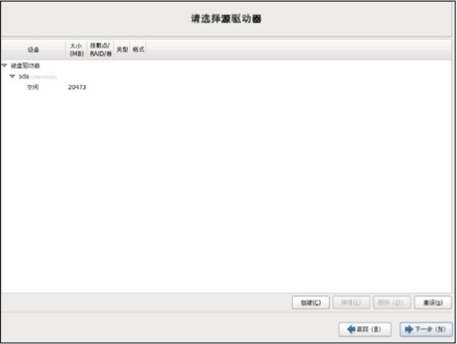
图 1 选择驱动器
我们已经知道，可以使用相同大小的硬盘配置 RAID，也可以使用相同大小的分区配置 RAID，方法都是一样的。我们在实验中就使用相同大小的两个分区创建 RAID 1 吧。
在选择驱动器界面单击"创建"按钮，进入"生成存储"界面，如图 2 所示。
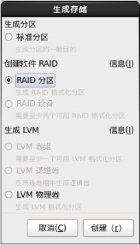
图 2 生成存储
在"生成存储"界面中，在"创建软件 RAID"选项组中选择"RAID 分区"单选按钮，单击"创建"按钮，进入"添加分区"界面，如图 3 所示。
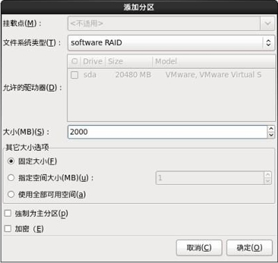
图 3 添加分区
我们要创建两个 2GB 大小的分区,用来组成 RAID 1。所以，在"添加分区"界面中，文件系统类型选择"software RAID (软RAID)"，分区大小指定为 2GB。单击"确定"按钮后，第一个 RAID 分区就建立完成了。同样，第二个 RAID 分区也这样建立。两个 RAID 分区都建立完成后，如图 4 所示。
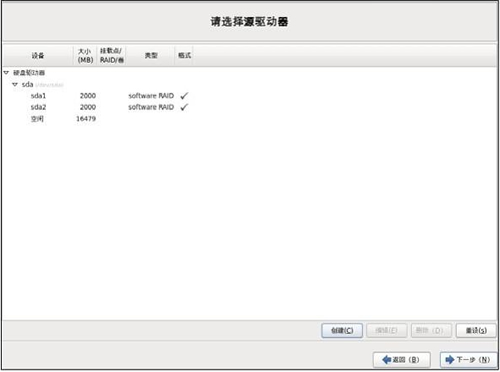
图 4 RAID分区建立完成
这时再单击"创建"按钮，进入"生成存储"界面，如图 5 所示。
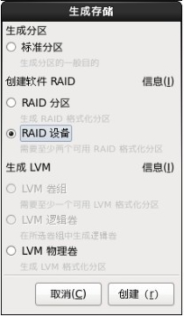
图 5 生成 RAID 存储
这时我们发现刚刚是灰色的不能选择的"RAID 设备"单选按钮已经可以选择了，证明我们现有的 RAID 分区具备了组成 RAID 设备的条件。我们选择"RAID 设备"单选按钮，然后单击"创建"按钮，就进入"创建 RAID 设备"界面，如图 6 所示。
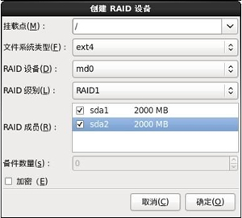
图 6 创建RAID设备
在这里，挂载点选择"/"分区，也就是说 / 分区是由两个等大小的分区组成的 RAID 1 设备，文件系统类型 选择"ext4"，RAID设备选择"md0"（第一个 RAID 设备），RAID 级别选择"RAID1"，同时记得勾选组成 RAID 1的两个分区 sda1 和 sda2。单击"确定"按钮，RAID 1 就建立完成了，如图 7 所示。

图 7 RAID 1建立完成
这里需要注意，只有 / 分区是 RAID 1，其他分区还没有分配。而且要想正确地安装 Linux，最少还需要分配 swap 分区。
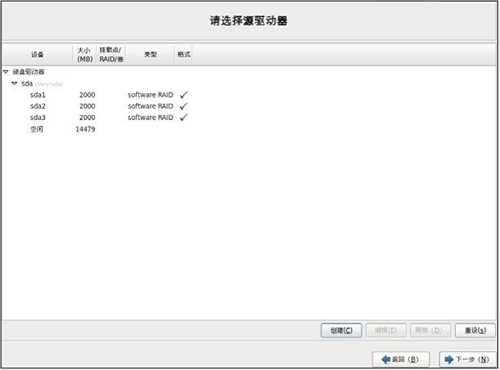
图 8 选择驱动器
接下来单击"创建"按钮，进入"生成存储"界面，如图 9 所示。
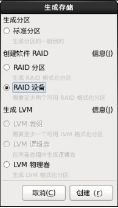
图 9 生成存储
在这里同样需要选择"RAID 设备"单选按钮，然后单击"创建"按钮，进入"创建 RAID 设备"界面，如图 10 所示。
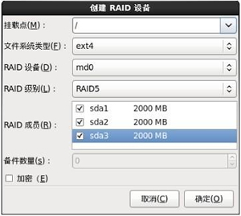
图 10 创建 RAID 设备
在"创建 RAID 设备"界面中，挂载点仍然选择 / 分区，不过 RAID 级别选择的是 RAID 5，同时勾选组成 RAID 5 的三个分区，单击"确定"按钮，RAID 5 的 / 分区就建立完成了。
RAID 1 配置
配置 RAID 1 时同样需要启动图形安装程序，在分区界面进行配置，如图 1 所示。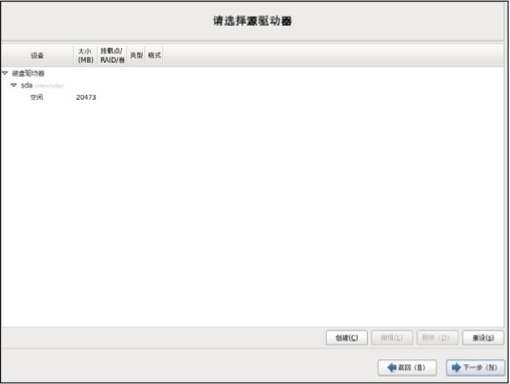
图 1 选择驱动器
我们已经知道，可以使用相同大小的硬盘配置 RAID，也可以使用相同大小的分区配置 RAID，方法都是一样的。我们在实验中就使用相同大小的两个分区创建 RAID 1 吧。
在选择驱动器界面单击"创建"按钮，进入"生成存储"界面，如图 2 所示。
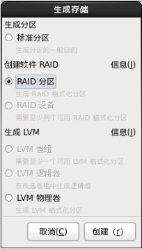
图 2 生成存储
在"生成存储"界面中，在"创建软件 RAID"选项组中选择"RAID 分区"单选按钮，单击"创建"按钮，进入"添加分区"界面，如图 3 所示。
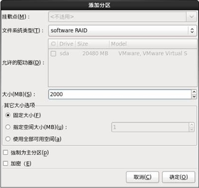
图 3 添加分区
我们要创建两个 2GB 大小的分区,用来组成 RAID 1。所以，在"添加分区"界面中，文件系统类型选择"software RAID (软RAID)"，分区大小指定为 2GB。单击"确定"按钮后，第一个 RAID 分区就建立完成了。同样，第二个 RAID 分区也这样建立。两个 RAID 分区都建立完成后，如图 4 所示。
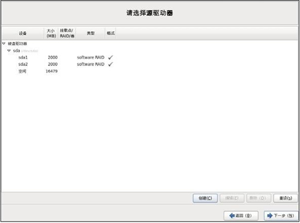
图 4 RAID分区建立完成
这时再单击"创建"按钮，进入"生成存储"界面，如图 5 所示。
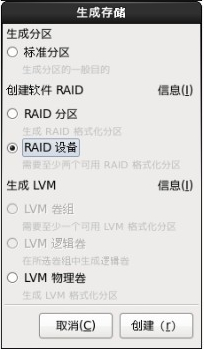
图 5 生成 RAID 存储
这时我们发现刚刚是灰色的不能选择的"RAID 设备"单选按钮已经可以选择了，证明我们现有的 RAID 分区具备了组成 RAID 设备的条件。我们选择"RAID 设备"单选按钮，然后单击"创建"按钮，就进入"创建 RAID 设备"界面，如图 6 所示。
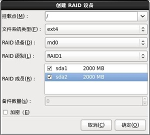
图 6 创建RAID设备
在这里，挂载点选择"/"分区，也就是说 / 分区是由两个等大小的分区组成的 RAID 1 设备，文件系统类型 选择"ext4"，RAID设备选择"md0"（第一个 RAID 设备），RAID 级别选择"RAID1"，同时记得勾选组成 RAID 1的两个分区 sda1 和 sda2。单击"确定"按钮，RAID 1 就建立完成了，如图 7 所示。
图 7 RAID 1建立完成
这里需要注意，只有 / 分区是 RAID 1，其他分区还没有分配。而且要想正确地安装 Linux，最少还需要分配 swap 分区。
RAID 5配置
RAID 5 分配置和 RAID 1 的配置一致，只不过 RAID 1 只需要两个等大小的 RAID 分区，而 RAID 5 却需要最少三个等大小的 RAID 分区。我们先建立三个等大小的 RAID 分区，如图 8 所示。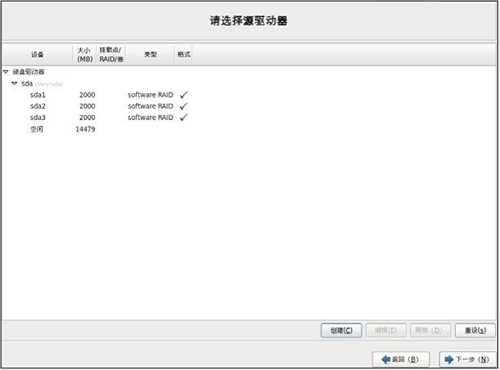
图 8 选择驱动器
接下来单击"创建"按钮，进入"生成存储"界面，如图 9 所示。
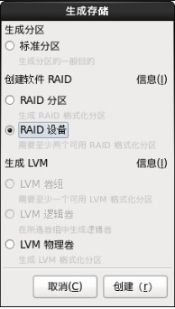
图 9 生成存储
在这里同样需要选择"RAID 设备"单选按钮，然后单击"创建"按钮，进入"创建 RAID 设备"界面，如图 10 所示。
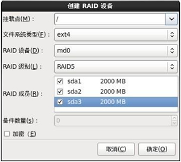
图 10 创建 RAID 设备
在"创建 RAID 设备"界面中，挂载点仍然选择 / 分区，不过 RAID 级别选择的是 RAID 5，同时勾选组成 RAID 5 的三个分区，单击"确定"按钮，RAID 5 的 / 分区就建立完成了。
关注微信公众号「站长严长生」，在手机上阅读所有教程，随时随地都能学习。本公众号由C语言中文网站长运营，每日更新，坚持原创，敢说真话，凡事有态度。

微信扫描二维码关注公众号